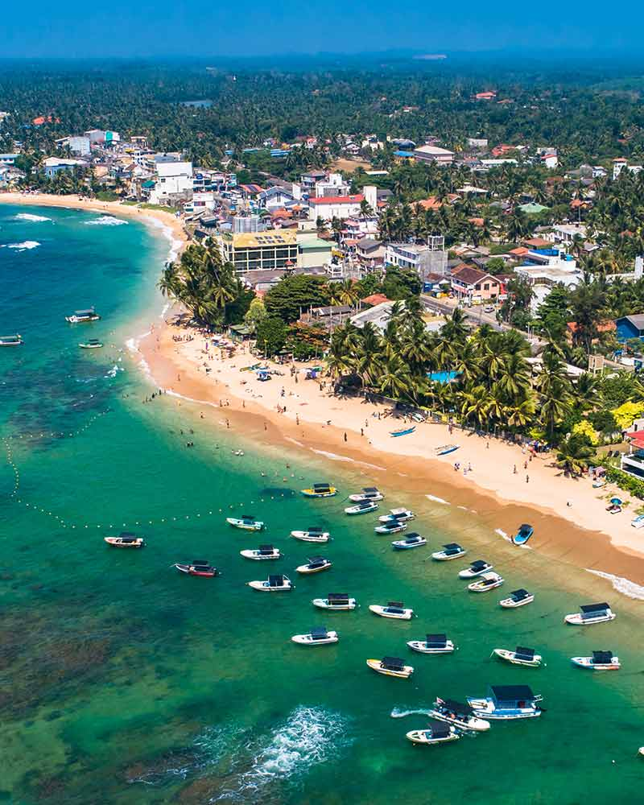

About Hikkaduwa
You ought to see the turtle hatchery if you're in Hikka. In large tanks, a small variety of turtles are raised and cared for there. Rekawa and Kalpitiya are good locations to see turtles in their natural habitats, and as far as we are aware, Galle and Kosgoda also have turtle hatcheries. It is not difficult to overlook as you drive northward along the Hikka beachfront. Outside, murals with colorful turtle themes are all over the walls. On the interior, there are only a number of tanks—different ones for various species of turtles—along with plenty of signboards with information about them. As soon as you enter, there is a sandy area where the turtle eggs are laid, of course. Sea turtle eggs typically hatch in the summer, and the young hatchlings travel to the surface in 3 to 7 days.
Mission and Humble Beginnings
The Sea Turtle Hatchery and Rescue Center, which aims to save some of the world's endangered turtle species, is located a few kilometers north of the main Hikkaduwa town. The southern shore of the island is home to a number of turtle hatcheries, including this one. It began as a community project to help safeguard the southern coast's biodiversity, but it has since developed into a full-fledged hatchery and rescue facility with devoted crews that toil around-the-clock to study, look after, and safeguard many turtle species.
Its Conservation Efforts
Five different species of turtles are now cared for at the hatchery and rescue center. The Green Turtle, Hawksbill Turtle, Leatherback Turtle, and Olive Ridley Turtle are among these species. The facilities at the sea turtle hatchery and rescue center, which also provides care for adult turtle species that have been plucked from the water after suffering injuries, include contemporary water tanks. the location of the turtles' egg-laying grounds, which One of the odder sights in the middle has distinct little mounds of sand placed neatly between one another. At each of these mounds, the hatching of the turtle eggs is carefully monitored.
The turtles
Urrells are really cute! Sadly, some of them are in danger. These kinds of hatcheries work to preserve them. The 'tortoise shell' trade, which allegedly involves poachers removing the turtles' scales while they're still alive and using them to make ornaments for sale, has driven the hawksbill turtle population to the point of extinction. The olive ridley, leatherback, green, hawksbill, and loggerhead turtles are a few of the species that are well-liked in Sri Lanka. According to what was said, the turtles are given little fish at specific feeding times. When at sea, loggerhead and leatherback turtles consume a lot of jellyfish. "Unhand me, you stupid human." Personally, I believe turtles to be among the strangest-looking creatures ever. Look at those bug eyes and unhappy faces, for example. They are among the oldest species of reptile known, having evolved roughly 220 million years ago. Some of them have a lifespan of up to 200 years. Read up on the turtles and look at the pictures posted around the tanks. You could discover a great deal about these amazing, extinct creatures and their battle for existence. Although there is a sign warning against doing so because they might bite, they will allow you to lift up a young turtle for snuggling under supervision.
Conclusion
The sea turtle hatchery is a great place to see if you're in Hikkaduwa. Seeing the turtles in person is a wonderful experience if you love animals. Fun fact: It's a family-run conservation hatchery. After being founded by a man named Ariyapala and being passed down to his daughter, who tragically died in the tsunami of 2004, Ariyapala's son took over and, with help from abroad, restored the hatchery.
Other fun Activities in Hikkaduwa
Hikkaduwa is the ideal beach vacation location because of the expansive beaches, the intriguing local lifestyle, the vibrant atmosphere, and the distinctive heritage.When visiting this gorgeous coastal resort, see the extensive coral reefs, the places of worship, and the fascinating museums.